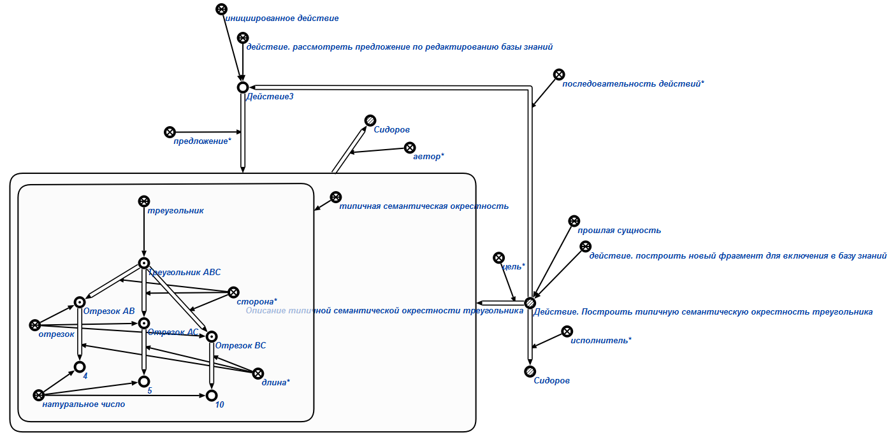

Задачей агента формирования предложения по редактированию базы знаний является формирование предложения*, являющегося структурой, описывающей предлагаемое изменение в базе знаний. Данный агент инициируется при условии появления в памяти вопросной конструкции, соответствующей действию.сформировать предложения по редактированию базы знаний.
Аргументом действия является знак структуры, описывающей предлагаемое изменение в базе знаний.
Также в качестве второго аргумента может быть добавлен знак раздела (атомарного, либо неатомарного), в который будет интерграровано предложение в случае его утверждения администратором базы знаний.
Возможные результаты работы агента:
-
Если первый аргумент не является знаком структуры, то выводим сообщение об ошибке(Wrong first parameter! It must be a structure(rrel_struct)).
-
В случае если присутствует второй аргумент и не является ни атомарным разделом, ни неатомарным разделом базы знаний, то выводим сообщение об ошибке(Wrong second parameter! It must be a section)
-
Если пользователь, инициировавший действие не является разработчиком, то выводим сообщение(Access denied. User must be a developer).
-
В случае успешного выполнения агента формируется конструкция, представленная на рисунке. Инициируется знак действия. рассмотреть предложение по редактированию базы знаний и данный знак действия добавляется в текущие процессы развития компьютерной системы. Генерируется связка отношения предложение*, связывающую знак действия. рассмотреть предложение по редактированию базы знаний и первый аргумент действия, инициировавшего агент(структура становится предложением). автором предложения становится пользователь, инициировавший выполнение агента.
-
Если предложение связано с некоторым знаком действия отношением цель*(на данный момент нет проверки на принадлежность узла к классу действия, присутствует только проверка на наличие отношения цель*, откуда и берем узел, который считаем за действие разработчика базы знаний), то генерируется связка отношения последовательность действий*, связывающая действие разработчика базы знаний и знак действия. рассмотреть предложение по редактированию базы знаний. Действие разработчика базы знаний становится прошлой сущностью(изначально действие разработчика базы знаний является инициированным действием, и, чтобы сделать его прошлой сущностью, необходимо удалить принадлежность классу инициированный знаков действия). Действие разработчика базы знаний добавляется в историю развития компьютерной история развития компьютерной системы
-
Если второй аргумент присутсвует, то генерируется связка отношения объект*, связывающая знак действия. рассмотреть предложение по редактированию базы знаний и второй аргумент(раздел).
В данном агенте используется следующие scp-программы:
-
scp- программа добавления в текущие процессы развития
